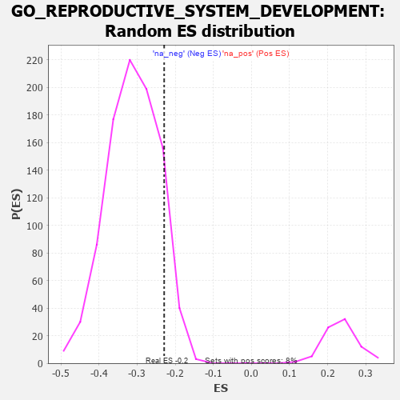

| | | Dataset | 7d |
| Phenotype | NoPhenotypeAvailable |
| Upregulated in class | na_neg |
| GeneSet | GO_REPRODUCTIVE_SYSTEM_DEVELOPMENT |
| Enrichment Score (ES) | -0.22915427 |
| Normalized Enrichment Score (NES) | -0.73564935 |
| Nominal p-value | 0.8945652 |
| FDR q-value | 1.0 |
| FWER p-Value | 1.0 |
Table: GSEA Results Summary
 Fig 1: Enrichment plot: GO_REPRODUCTIVE_SYSTEM_DEVELOPMENT
Fig 1: Enrichment plot: GO_REPRODUCTIVE_SYSTEM_DEVELOPMENT
Profile of the Running ES Score & Positions of GeneSet Members on the Rank Ordered List
| PROBE | GENE SYMBOL | GENE_TITLE | RANK IN GENE LIST | RANK METRIC SCORE | RUNNING ES | CORE ENRICHMENT | | 1 | ST14 | | | 7 | 5.713 | 0.0993 | No |
| 2 | SPO11 | | | 35 | 3.371 | 0.1550 | No |
| 3 | SP3 | | | 131 | 1.391 | 0.1674 | No |
| 4 | TPPP3 | | | 195 | 1.079 | 0.1783 | No |
| 5 | ARNT | | | 357 | 0.741 | 0.1708 | No |
| 6 | BAX | | | 387 | 0.711 | 0.1796 | No |
| 7 | ERCC1 | | | 453 | 0.660 | 0.1830 | No |
| 8 | FBXW8 | | | 601 | 0.594 | 0.1747 | No |
| 9 | FST | | | 698 | 0.560 | 0.1723 | No |
| 10 | VASH1 | | | 712 | 0.556 | 0.1804 | No |
| 11 | TFEB | | | 839 | 0.522 | 0.1736 | No |
| 12 | RNF38 | | | 862 | 0.516 | 0.1798 | No |
| 13 | HMGB2 | | | 892 | 0.507 | 0.1851 | No |
| 14 | WDR48 | | | 975 | 0.489 | 0.1832 | No |
| 15 | MEN1 | | | 1003 | 0.483 | 0.1883 | No |
| 16 | REC8 | | | 1028 | 0.478 | 0.1936 | No |
| 17 | AKT1 | | | 1040 | 0.476 | 0.2005 | No |
| 18 | RBM15 | | | 1057 | 0.473 | 0.2068 | No |
| 19 | SRC | | | 1128 | 0.459 | 0.2060 | No |
| 20 | FKBP4 | | | 1390 | 0.412 | 0.1800 | No |
| 21 | INHBB | | | 1514 | 0.388 | 0.1712 | No |
| 22 | RXRA | | | 1647 | 0.365 | 0.1609 | No |
| 23 | RTCB | | | 1739 | 0.347 | 0.1554 | No |
| 24 | MSH2 | | | 1819 | 0.334 | 0.1512 | No |
| 25 | SGPL1 | | | 1820 | 0.334 | 0.1571 | No |
| 26 | GATA4 | | | 1837 | 0.330 | 0.1609 | No |
| 27 | TCF7 | | | 1848 | 0.328 | 0.1653 | No |
| 28 | SMAD4 | | | 1860 | 0.326 | 0.1697 | No |
| 29 | TAF4 | | | 1899 | 0.321 | 0.1705 | No |
| 30 | BMP7 | | | 2107 | 0.290 | 0.1493 | No |
| 31 | EAF2 | | | 2278 | 0.263 | 0.1323 | No |
| 32 | LHX9 | | | 2393 | 0.247 | 0.1221 | No |
| 33 | CSDE1 | | | 2693 | 0.200 | 0.0877 | No |
| 34 | SLIT2 | | | 2724 | 0.195 | 0.0873 | No |
| 35 | FGFR2 | | | 2895 | 0.167 | 0.0686 | No |
| 36 | WNT4 | | | 3023 | 0.146 | 0.0551 | No |
| 37 | BRCA2 | | | 3024 | 0.146 | 0.0576 | No |
| 38 | LEF1 | | | 3037 | 0.144 | 0.0586 | No |
| 39 | BIRC6 | | | 3047 | 0.143 | 0.0600 | No |
| 40 | LHX3 | | | 3092 | 0.138 | 0.0568 | No |
| 41 | PRDX4 | | | 3214 | 0.120 | 0.0436 | No |
| 42 | GAS2 | | | 3392 | 0.090 | 0.0227 | No |
| 43 | MED1 | | | 3405 | 0.089 | 0.0227 | No |
| 44 | GLI1 | | | 3489 | 0.079 | 0.0136 | No |
| 45 | DMRT1 | | | 3546 | 0.068 | 0.0077 | No |
| 46 | MAPK3 | | | 3589 | 0.062 | 0.0034 | No |
| 47 | CBL | | | 3621 | 0.056 | 0.0005 | No |
| 48 | HSF1 | | | 3718 | 0.039 | -0.0111 | No |
| 49 | NIPBL | | | 3900 | 0.010 | -0.0339 | No |
| 50 | SFRP2 | | | 4065 | -0.018 | -0.0544 | No |
| 51 | ROBO2 | | | 4066 | -0.018 | -0.0540 | No |
| 52 | WNT2 | | | 4084 | -0.021 | -0.0558 | No |
| 53 | MSH4 | | | 4176 | -0.038 | -0.0667 | No |
| 54 | SETD2 | | | 4443 | -0.084 | -0.0990 | No |
| 55 | GATA3 | | | 4614 | -0.120 | -0.1185 | No |
| 56 | DLG1 | | | 4860 | -0.169 | -0.1466 | No |
| 57 | SLIT3 | | | 4890 | -0.175 | -0.1472 | No |
| 58 | ATRX | | | 4929 | -0.184 | -0.1488 | No |
| 59 | FZD4 | | | 4940 | -0.186 | -0.1468 | No |
| 60 | ASH1L | | | 5203 | -0.248 | -0.1758 | No |
| 61 | ATM | | | 5210 | -0.249 | -0.1722 | No |
| 62 | TMF1 | | | 5225 | -0.251 | -0.1695 | No |
| 63 | PTEN | | | 5262 | -0.261 | -0.1695 | No |
| 64 | TCF21 | | | 5340 | -0.283 | -0.1743 | No |
| 65 | FZD5 | | | 5386 | -0.292 | -0.1749 | No |
| 66 | PRDX3 | | | 5389 | -0.293 | -0.1700 | No |
| 67 | PLK4 | | | 5397 | -0.295 | -0.1658 | No |
| 68 | SOX8 | | | 5404 | -0.296 | -0.1613 | No |
| 69 | VDR | | | 5517 | -0.325 | -0.1699 | No |
| 70 | ROR2 | | | 5626 | -0.353 | -0.1774 | No |
| 71 | ASPM | | | 5637 | -0.358 | -0.1724 | No |
| 72 | CASP8 | | | 5678 | -0.369 | -0.1710 | No |
| 73 | ADA | | | 5798 | -0.405 | -0.1790 | No |
| 74 | RAB13 | | | 5870 | -0.425 | -0.1805 | No |
| 75 | STK11 | | | 5922 | -0.443 | -0.1793 | No |
| 76 | PRDM1 | | | 5956 | -0.457 | -0.1754 | No |
| 77 | PTPRN | | | 6007 | -0.474 | -0.1735 | No |
| 78 | UBB | | | 6090 | -0.503 | -0.1751 | No |
| 79 | STK4 | | | 6145 | -0.518 | -0.1728 | No |
| 80 | INSR | | | 6204 | -0.538 | -0.1707 | No |
| 81 | TMED2 | | | 6665 | -0.746 | -0.2161 | Yes |
| 82 | VASH2 | | | 6680 | -0.752 | -0.2047 | Yes |
| 83 | EGFR | | | 6708 | -0.765 | -0.1947 | Yes |
| 84 | WDR19 | | | 6796 | -0.812 | -0.1915 | Yes |
| 85 | GHSR | | | 6937 | -0.894 | -0.1936 | Yes |
| 86 | AR | | | 7169 | -1.046 | -0.2045 | Yes |
| 87 | OVOL2 | | | 7197 | -1.068 | -0.1892 | Yes |
| 88 | LHX1 | | | 7431 | -1.305 | -0.1959 | Yes |
| 89 | MMP19 | | | 7433 | -1.309 | -0.1731 | Yes |
| 90 | CASP2 | | | 7442 | -1.322 | -0.1509 | Yes |
| 91 | TTPA | | | 7575 | -1.516 | -0.1411 | Yes |
| 92 | PKD1 | | | 7628 | -1.611 | -0.1194 | Yes |
| 93 | BOK | | | 7715 | -1.817 | -0.0985 | Yes |
| 94 | CASP3 | | | 7747 | -1.902 | -0.0691 | Yes |
| 95 | PKD2 | | | 7822 | -2.167 | -0.0404 | Yes |
| 96 | ARRB1 | | | 7935 | -3.377 | 0.0046 | Yes |
Table: GSEA details [plain text format]

Fig 2: GO_REPRODUCTIVE_SYSTEM_DEVELOPMENT: Random ES distribution
Gene set null distribution of ES for GO_REPRODUCTIVE_SYSTEM_DEVELOPMENT